تصادمات الكواكب الأولية: الخصائص الإحصائية للمقذوفات
الملخص
تهيمن التصادمات بين الأجنة الكوكبية ذات الأحجام الممتدة من حجم القمر إلى حجم المريخ على المرحلة الأخيرة من تكوّن الكواكب الصخرية. وتحتاج محاكاة هذه المرحلة إلى معالجة صعوبة إدراج المادة اللاحقة للاصطدام من غير إشباع المُكامل العددي. ويتمثل نهج شائع في إدراج المادة المتولدة عن التصادم بتجميعها في عدد قليل من الأجسام ذات الكتلة نفسها، ثم نثرها بانتظام حول نقطة التصادم. غير أن هذا النهج يفرط في تبسيط خصائص مادة التصادم بإهماله سمات يمكن أن تؤدي أدوارا مهمة في البنية والتركيب النهائيين للنظام. في هذه الدراسة، نقدم تحليلا إحصائيا للمعمار المداري، ولتوزيعات الكتلة والحجم، للمادة المتولدة من تصادمات جنين-جنين، ونبين كيف يمكن استعمالها لتطوير نموذج قابل للإدماج مباشرة في التكاملات العددية. فعلى سبيل المثال، تشير نتائج تحليلنا إلى أن كتل الشظايا تتبع توزيعا أسيا بأس قدره ضمن المجال من إلى كتلة أرضية. وتبين توزيعات السرعات اللاحقة للاصطدام أن عددا كبيرا من الشظايا يتناثر باتجاه النجم المركزي. وتمثل النتيجة الأخيرة اكتشافا جديدا قد يكون ذا صلة كبيرة بإيصال المادة من المناطق الخارجية لحزام الكويكبات إلى مناطق التراكم الخاصة بالكواكب الأرضية. وأخيرا، نقدم نموذجا تحليليا للتوزيع 2D للشظايا يمكن إدماجه مباشرة في التكاملات العددية.
keywords:
الكواكب والأقمار: التكوّن – الكواكب والأقمار: الكواكب الأرضية1 المقدمة
استنادا إلى النموذج القياسي لتكوّن الكواكب، تهيمن على المرحلة الأخيرة من تكوّن الكواكب الصخرية تصادمات بين أجسام صلبة ذات أحجام تمتد من حجم القمر إلى حجم المريخ، وتعرف بالكواكب الأولية أو الأجنة الكوكبية. وكتقريب أول، يمكن محاكاة هذه المرحلة بوصفها تطور نظام من الأجسام التي تتفاعل حصرا عبر الجاذبية (مثلا، Ida & Makino 1993, Raymond et al. 2006, Barnes et al. 2009, Morishima 2015, Clement et al. 2019). وتجرى هذه المحاكاة عموما باستخدام مكاملات N-body، حيث يكون القيد الأكبر هو عدد الأجسام، الذي يُحافَظ عليه عادة دون بضع مئات لتجنب الحسابات الطويلة.
نظرا إلى أن زمن تكاملات N-body يزداد مع عدد الأجسام، ومن أجل ضمان تنفيذ محاكاة التكوّن في زمن معقول، كثيرا ما تُعامل التصادمات على أنها غير مرنة تماما. أي إن الجسمين المتصادمين يندمجان اندماجا كاملا ولا تنتج شظايا ولا حطام (مثلا، Raymond et al. 2004, O’Brien et al. 2006 Morishima 2015). وقد ثبت أن هذا النهج مفيد في إظهار عملية التكوّن، ولا سيما بوصفه إثباتا للمفهوم. غير أنه يميل إلى المبالغة في تقدير كفاءة التصادم، مما يؤدي إلى زمن تكوّن أقصر وكواكب أكبر كتلة. ويتسبب ذلك في أن يكون النظام الكوكبي النهائي ذا عدد أقل من الأجسام، مع كواكب أبعد عن النجم المركزي (Dugaro et al. 2020, Burger et al. 2020).
على الرغم من أن محاكاة التصادمات كانت جزءا أساسيا من علم الكواكب لعقود (مثلا، Dormand & Woolfson 1977, Benz et al. 1986, Wetherill 1988)، فإن إدراج الشظايا التصادمية في محاكاة التكوّن لم يكن مباشرا. ويعود السبب إلى أن التصادمات تنتج ملايين وملايين الشظايا، وإدراجها جميعا في تكامل N-body أمر غير عملي. وقد حاول باحثون كثيرون الالتفاف على هذه المسألة بإدراج عدد قليل فقط من الأجسام المتولدة عن الاصطدام (Chambers 2013, Clement et al. 2019). ويتمثل نهج آخر في استخدام فهرس للتصادمات لتحديد الأجسام اللاحقة للاصطدام ذات الإسهامات الأكبر (أي ذات الكتلة الأكبر) وتجاهل الباقي (Burger et al. 2020).
على الرغم من أن النهج أعلاه قرّب محاكاة تكوّن الكواكب الأرضية من المحاكاة الواقعية، فإنه لا يدرج إلا جزءا صغيرا من الأجسام المتولدة عن الاصطدام. ويتطلب نموذج تكوّن شامل إدراج هذه المادة كلها. غير أنه، كما أوضحنا أعلاه، من غير العملي إدراج جميع الشظايا اللاحقة للاصطدام كأجسام منفردة. ولحسن الحظ، فإن الكتلة الكلية لهذه الأجسام تتيح مسارا واعدا إلى الأمام.
لأن تأثير الأجسام اللاحقة للتصادم في بقية النظام يتم عبر تفاعلاتها الثقالية وتراكمها، فإن استخدام الكتلة الجمعية للأجسام المتولدة بعد التصادم يسمح بأخذ هذين العاملين في الحسبان. وسيكون السؤال الوحيد هو: كيف نمذج هذه الكتلة. اقترح Clement et al. (2019) توزيع الكتلة الكلية اللاحقة للاصطدام على هيئة مجموعة من أجسام بكتل قمرية. Carter et al. (2015) أدرجوها حطاما غير محلول بتوزيع الشظايا بانتظام في حلقات دائرية. ومع أن كلا هذين النهجين كان واعدا، فإن افتراضاتهما الأساسية مفرطة في التبسيط. ففي التصادمات الحقيقية، تختلف الشظايا اختلافا كبيرا في الحجم والسرعة، كما أن توزيعها غير منتظم. ويحتاج النموذج الشامل إلى أخذ ذلك كله في الحسبان. في هذه الورقة، ندرس الخصائص الإحصائية للمادة المقذوفة بفعل التصادمات خلال المرحلة التي تهيمن عليها التصادمات من تكوّن الكواكب الصخرية. وعلى وجه الخصوص، سنستخدم فهرسا لمحاكاة تصادمات SPH (هيدروديناميك الجسيمات الملساء) لتحديد توزيعات كتلة المقذوفات وسرعتها ومداراتها.
2 فهارس التصادمات
في هذا القسم، نقدم فهرسي التصادمات المستخدمين في دراستنا. يتكون الفهرس الأول من 1356 تصادما بين كواكب أولية، وقد حُصل عليه من محاكاة N-body للمرحلة المتأخرة من تكوّن الكواكب الأرضية في 10 نظاما مختلفا. ويحتوي هذا الفهرس، الذي سنشير إليه فيما يلي باسم فهرس PC (تصادمات الكواكب الأولية)، على الخصائص الفيزيائية للأجسام المتصادمة قبل زمن كل تصادم. أما الفهرس الثاني فيحتوي على نواتج محاكاة SPH للأجسام الكوكبية الأولية لشروط ابتدائية مختلفة. ونشير إلى هذا الفهرس باسم فهرس CO (نواتج التصادم). وفيما يلي نشرح هذين الفهرسين بمزيد من التفصيل.
2.1 فهرس تصادمات الكواكب الأولية
لتوليد مجموعة من تصادمات الكواكب الأولية، حاكينا المرحلة المتأخرة من تكوّن الكواكب الأرضية لـ 10 توزيعا مختلفا للأجنة الكوكبية. وقد نظرنا في نظام يتكون من الشمس، والمشتري في مدار دائري عند 5.2 AU، وقرص من الأجسام الكوكبية الأولية يمتد من 0.5 AU إلى 4.7 AU. واحتوى قرص الكواكب الأولية على نحو 200 جنينا كوكبيا تراوحت كتلها بين 0.02 و0.1 كتلة أرضية. واتباعا لـ (Kokubo & Ida, 2000)، وُضعت الأجنة الكوكبية عند مسافات مقدارها 5-10 من أنصاف أقطار هيل المتبادلة، وضُبطت كثافة سطح القرص بحيث تتبع ملفا مع g/cm3. واختلفت المحاكاة الـ 10 فقط في الكتلة الابتدائية ومدارات الكواكب الأولية. وقد كملنا كل نظام لمدة 1 Myr باستخدام الروتين الهجين في حزمة تكامل N-body المسماة Mercury (Chambers, 1999). وضُبطت خطوة زمن التكامل على 6 يوم.
تُعرَّف التصادمات في فهرس PC تعريفا فريدا بثلاث معلمات: الكتلة الكلية للأجسام المتصادمة ()، ونسبة كتلها ، وسرعة اصطدامها () بعد تطبيعها بسرعة الإفلات المتبادلة (وسنشير إليها فيما يلي بسرعة الاصطدام المُطبعة)11 1 تُعطى سرعة الإفلات المتبادلة بالعلاقة ، حيث إن و هما نصفا قطري الجسمين المتصادمين، و هو ثابت الجذب.. وهنا، تمثل و كتلتي الجسمين المتصادمين لحظة الاصطدام. ويمكن أن تؤدي معلمات أخرى، مثل زاوية التصادم، دورا أيضا في تحديد ناتج التصادم. غير أنها لا تُبحث في هذه الدراسة تفاديا للتعقيدات الحاسوبية. وبدلا من ذلك، نأخذ القيمة المتوسطة لهذه المعلمات، كما هو موضح في القسم 3.3.
يبين الشكل 1 توزيع جميع التصادمات الـ 1356 بدلالة و و. وكما هو مبين هنا، فإن التصادمات عالية السرعة () نادرة للغاية (أقل من 2% من جميع التصادمات) وتحدث عادة بين أجسام أصغر ( M⊕). وتتضح هيمنة الاصطدامات منخفضة السرعة أكثر في الشكل 2 حيث نعرض مدرجا تكراريا لسرعات التصادم. إذ إن ما يصل إلى 893 تصادما (نحو 2/3 من جميع التصادمات) لها سرعات اصطدام أصغر من سرعات الإفلات المتبادلة للأجسام المتصادمة ().
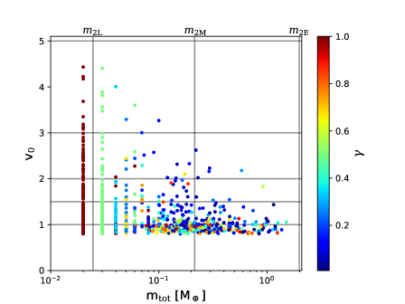
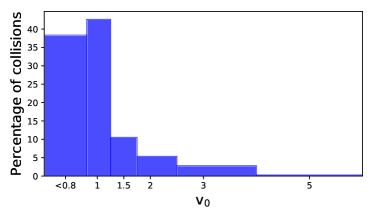
2.2 فهرس نواتج التصادم
يتكون فهرسنا لنواتج التصادم من 880 محاكاة SPH منخفضة الدقة (نحو 20000 جسيم22 2 حلل Burger et al. (2018) نواتج التصادمات لدقات تتراوح بين بضعة 10k و2.25M من جسيمات SPH. ووجدوا أنه حتى في التصادمات عالية الطاقة بين أجسام بكتلة الأرض والمريخ، لا تظهر النواتج العالمية (حركيات الشظايا وكتلها) إلا انحرافات طفيفة دون 10% مع تغيّر الدقات، ومن ثم لا تؤثر إلا هامشيا في التصنيف العالمي للناتج. ووجد أن الكسر الكتلي للماء دقيق ضمن بضعة في المئة فقط لأكبر جسم باق، وضمن نحو 25% لثاني أكبر شظية. وبما أننا نهتم أساسا بالكتل والحركيات الإجمالية للشظايا الباقية، فإننا نعتمد دقة مقدارها 20k من جسيمات SPH للموازنة بين الأداء والدقة. لكل سيناريو) لكوكبين أوليين متصادمين. وأُجريت محاكاة التصادمات باستخدام شيفرة SPH العاملة على GPU المسماة miluphcuda (Schäfer et al. 2016, Schäfer et al. 2020).
يشمل الإعداد الابتدائي للمقذوف والهدف جسيمات SPH على شبكات سداسية متراصة في توازن هيدروستاتيكي. ويُضبط الهدف والمقذوف في البداية بلا دوران، ويوضعان على مسافة متبادلة مقدارها ، حيث تشير و إلى نصف قطر الهدف والمقذوف، على التوالي.
نُمذج كلا المقذوف والهدف على أنهما سيليكات محاطة بقشور جليدية لأخذ الكسر الكتلي للماء في الحسبان. ونستخدم معادلة حالة Tillotson مع معاملات إدخال للبازلت والجليد (Schäfer et al., 2016) لتحديد الضغط. كما تُدرج مقاومة المادة، حيث تُحد مقاومة القص بمعيار الخضوع von Mises. ولنمذجة الكسور الشدية، نتبع Benz & Asphaug (1994) ونستخدم نموذج Grady-Kipp للتفتت واللزوجة الاصطناعية القياسية المعتادة لـ Monaghan & Pongracic (1985). وتحسب القوى الثقالية بين الجسيمات باستخدام شجرة Barnes-Hut.
يبين الجدول 1 مجال الشروط الابتدائية لمحاكاة التصادمات. وتقابل قيم الكتلة الكتلة التصادمية الكلية لجسمين بحجم Ceres (سنرمز إليهما فيما يلي بـ )، وجسمين بحجم القمر (يرمز إليهما بـ )، وجسمين بحجم المريخ (يرمز إليهما بـ )، وجسمين بحجم الأرض (يرمز إليهما بـ ). وللحفاظ على العمومية، نأخذ قيمتين مختلفتين للكسر الكتلي للماء لكل جسم. غير أن تركيب المادة المقذوفة لا يُبحث هنا.
2.2.1 معايير نوع التصادم
تنتج كل محاكاة SPH مواضع وسرعات وكتل جميع الأجسام المتكونة خلال 9 إلى 12 ساعة بعد الاصطدام. ولتحديد نوع التصادم، يجب فحص الأجسام اللاحقة للاصطدام بحثا عن أجسام محتملة مرتبطة ثقاليا، وكذلك لفصل الأجسام الرئيسة عن الشظايا.
ولتحديد ما إذا كان جسمان مرتبطين ثقاليا، نقارن سرعتهما النسبية () بسرعة الإفلات المتبادلة بينهما. فإذا كانت أصغر من سرعة الإفلات المتبادلة، نعد الجسمين مرتبطين ثقاليا وندمجهما في جسم واحد عند مركز كتلتهما. ونواصل هذه العملية إلى أن لا تبقى أي أزواج من المقذوفات المرتبطة ثقاليا. وأشارت النتائج إلى أن 15%-30% من المادة اللاحقة للاصطدام تكون مرتبطة ثقاليا بأجسامها الرئيسة وتُعاد مراكمتها عليها.
ولفصل الأجسام الرئيسة (أي بقايا الجسمين المتصادمين إن لم يدمرا) عن الشظايا، نستخدم المعيار الآتي: إذا فقد الجسم المصطدم أكثر من 90% من كتلته الأصلية، فيُعد مدمرا ولا يعود جسما رئيسا (Leinhardt & Stewart, 2012).
ومن خلال هاتين العمليتين، نحدد 5 أنواع محتملة من التصادمات:
-
•
الاندماج التام (PM): يندمج الجسمان المتصادمان وينتجان جسما رئيسا واحدا بلا شظايا؛
-
•
الاندماج شبه التام (qPM): يُراكم أكثر من 90% من أحد الجسمين المتصادمين على الآخر، منتجا جسما رئيسا واحدا وعددا صغيرا من الشظايا؛
-
•
التراكم الجزئي (PA): يُراكم أقل من 90% من أحد الجسمين المتصادمين على الآخر، مما يؤدي إلى جسم رئيس واحد أو جسمين رئيسين وشظايا؛
-
•
تصادم حاتي (EC): يفقد أكبر جسم أقل من 90% من كتلته أثناء التصادم، مما يؤدي إلى جسم رئيس واحد أو جسمين رئيسين وشظايا؛
-
•
تصادم كارثي (CC): يُدمَّر كلا الجسمين المتصادمين وتتحول الكتلة كلها إلى شظايا.
نود أن نشير إلى أن نواتج التصادم الخمسة أعلاه تختلف اختلافا ملحوظا عن تلك التي وصفها Leinhardt & Stewart (2012). فعلى وجه الخصوص، يقسم هؤلاء المؤلفون تصادمات PA وEC إلى فئات أصغر، تشمل الاصطدام العابر الخالص، والاصطدام العابر الحاتي، والحفر، والتصادمات المماسة. وقد قررنا عدم اتباع هذا التصنيف، إذ يستحيل في مجموعة بياناتنا تتبع أي الأجسام هي الجسمان المتصادمان في نهاية المحاكاة.
| Parameter | value |
|---|---|
| Total mass [M⊕] | , , |
| , 2 | |
| Mass-ratio | 0.1, 0.5, 1.0 |
| Impact velocity [] | 1, 1.5, 2, 3, 5 |
| Impact angle [deg] | 0, 20, 40, 60 |
| Body 1 water mass fraction | 0.1, 0.2 |
| Body 2 water mass fraction | 0.1, 0.2 |
أشارت نتائج محاكاة SPH لدينا إلى أن نوع التصادم يعتمد بقوة على سرعة الاصطدام وزاويته، في حين يكاد يكون تأثير المعلمات الأخرى، مثل المسامية وتركيب المادة، مهملا. وعلى وجه الخصوص:
-
•
بالنسبة إلى التصادمات ذات سرعات اصطدام قابلة للمقارنة مع سرعة الإفلات ()، يكون الناتج دائما PM أو qPM،
-
•
لا تؤدي التصادمات ذات سرعات اصطدام لا تقل عن ثلاثة أمثال سرعة الإفلات () إلى PM قط،
-
•
أما التصادمات ذات سرعات اصطدام أكبر بخمسة أمثال من سرعة الإفلات ()، فتؤدي إما إلى EC أو CC.
تتسق هذه النتائج مع نواتج التصادم المتوقعة في Leinhardt & Stewart (2012). ويبين الشكل 3 حدوث هذه التصادمات بوصفه دالة في سرعة الاصطدام لجميع محاكاة SPH لدينا.
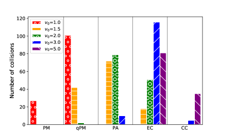
3 التحليل والمناقشة
في هذا القسم، نستخدم نتائج SPH من فهرس CO لتقديم تحليل للنواتج الممكنة للتصادمات في فهرس PC. ونبدأ باستخدام تصنيف التصادمات المقدم في القسم السابق لتحديد أنواع التصادمات التي يمكن أن تظهر من فهرس PC. ويبين الشكل 4 النتائج. وكما يظهر هنا، فإن غالبية كبيرة من التصادمات (84.9%) تؤدي إلى اندماج تام أو شبه تام. وتسهم أنواع أخرى من التصادمات أيضا، ولكن بدرجة أصغر بكثير؛ إذ يظهر التراكم الجزئي بنسبة 7.7%، ويحدث الحت بنسبة 7.2%، ولا يقع التحطم الكامل للجسمين المتصادمين (التصادم الكارثي) إلا في 0.18% من الحالات.
3.1 الكتلة الكلية للشظايا
باستخدام نتائج محاكاة SPH، حددنا الكتلة الكلية للشظايا التي يمكن أن تنتج في كل تصادم من تصادمات PC. وجدنا أن الاصطدامات ذات التراكم الجزئي ستكون صاحبة الإسهام الأكبر، إذ تنتج معظم كتلة الشظايا. وأكبر كتلة كلية لاحقة للاصطدام ناتجة في جميع التصادمات ضمن فهرس PC هي تلك الناتجة من تصادم PA بين جنينين كتلتهما و. وعلى الرغم من سرعة اصطدامهما المنخفضة نسبيا ()، يمكن لهذين الجسمين إنتاج ما يقارب من الشظايا، وهو ما يعادل 17% من الكتلة الابتدائية لنظامهما الموافق. وتشير النتائج إلى أنه، في المتوسط، تظهر ثلاثة من هذه التصادمات في كل محاكاة تكوّن، حيث يمكن أن يصل الإسهام الجمعي لهذه التصادمات في الكتلة الكلية للشظايا المنتجة إلى .
يشير تحليلنا أيضا إلى أنه على الرغم من أن التصادمات الكارثية تحول كل الكتل المتصادمة إلى حطام، فإن إسهاماتها في الكتلة الكلية للشظايا صغيرة. وبما أن هذه التصادمات لا تحدث إلا عند سرعات اصطدام عالية () وكتلة تصادمية كلية صغيرة نسبيا ( M⊕)، فهي نادرة. ولا تتجاوز نسبة التصادمات من نوع CC في فهرس PC 0.14% من جميع التصادمات. ولذلك، لا تقدم هذه التصادمات إسهامات مهمة في الكتلة الكلية للشظايا.
أظهرت النتائج أنه، في المتوسط، يتحول في كل محاكاة 0.192 M⊕، الموافق لـ 4.2% من الكتلة الابتدائية الكلية للنظام، إلى حطام. وهذه القيمة أصغر من تلك المبلغ عنها في دراسة Burger et al. (2020)، حيث يتحول 18% – 24% من الكتلة الابتدائية إلى شظايا. ونعتقد أن جذور هذا التباين تعود إلى الفروق بين الإعدادات الابتدائية في محاكاتنا وتلك الخاصة بهؤلاء المؤلفين. فعلى سبيل المثال، أدرج هؤلاء المؤلفون زحل، الذي يمكن أن يزيد اضطراب مدارات الأجنة الكوكبية ويرفع سرعات اصطدامها. كما أدرجوا عددا أكبر من الأجسام، مما يزيد التفاعلات المتبادلة بين الأجنة، ومن ثم يزيد سرعات اصطدامها. ولذلك ينبغي اعتبار كتلة الشظايا الكلية البالغة 4.2% في محاكاتنا حدا أدنى محافظا، لكنه لا يزال كبيرا بما يكفي للتأكيد على أهمية إدراج الشظايا في محاكاة التكوّن. ويكتسب ذلك أهمية خاصة عند دراسة تركيب الأجسام النهائية.
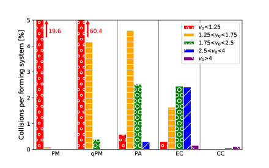
نود أن نلاحظ، من باب الاكتمال والعمومية، أننا أجرينا أيضا 10 محاكاة إضافية من نوع PC أدرجنا فيها زحل أيضا. وسنحلل هذه التصادمات ودرجة إسهام زحل في نواتج التصادم في القسم 3.3.1.
3.2 توزيع كتل الشظايا
غالبا ما يُهمَل توزيع كتل المادة اللاحقة للاصطدام في المحاكاة التي تتضمن التفتت. وقد جرت العادة على إدراج كل المادة اللاحقة للاصطدام في بضعة أجسام، بل في بعض الحالات بكتل متساوية (مثلا، Clement et al. 2019; Poon et al. 2020; Scora et al. 2020). غير أنه، كما أشار بعض المؤلفين (Mustill et al. 2018; Dugaro et al. 2020)، يمكن للشظايا مختلفة الكتل أن تؤثر في تطور النظام على نحو مختلف، من منظور فيزيائي وكيميائي على حد سواء. في هذا القسم، نقدم تحليلا لتوزيع كتل الأجسام اللاحقة للاصطدام، ونشتق معادلة يمكن إدماجها في محاكاة التكوّن.
يبين الشكل 5 مدرجا تكراريا لكتل الشظايا في جميع محاكاة فهرس CO. وتقابل الرسوم الملونة توزيع كتل الشظايا المنتجة في المجموعات الفرعية الأربع للتصادمات ذات الكتل التصادمية الكلية و و و كما في الجدول 1. وكما هو مبين هنا، لا توجد فروق مهمة في توزيعات كتل هذه الاصطدامات. وفي الحالات الأربع كلها، تُظهر المنطقة المقابلة لـ اتجاها خطيا في فضاء لوغاريتمي-لوغاريتمي، بميل يتراوح من -1.09 للتصادم إلى -1.32 لنظام . ويبين الشكل 5 أيضا أنه، باستثناء المجال الصغير (وذلك بسبب أن كتل أصغر بمرتبتين عشريتين من كتل )، تُظهر توزيعات كتل الشظايا النهائية تداخلا (انظر اللوحة السفلية). ويشير ذلك إلى أنه، في المجال ، يمكن دراسة توزيع الكتلة اللاحق للاصطدام في هذه التصادمات الأربع مجتمعة. ووجدنا أن هذه الشظايا، مجتمعة، تقدم توزيعا أسيا يُعطى بـ
| (1) |
وهنا، تمثل عدد الشظايا ذات الكتلة الواقعة بين و. ومن المهم الإشارة إلى أن اختيار مجال الكتلة كان لتجنب آثار اللايقين الحاسوبي. فعلى سبيل المثال، عند القيم الأصغر لكتل الشظايا يعتمد التوزيع بقوة على دقة محاكاة SPH، وعند القيم الأكبر يهيمن على التوزيع أكبر البقايا. وعلى وجه الخصوص، تقابل القمم 5 بين -1.04 و0 سيناريوهات الاصطدام العابر التي تبقى فيها كتلة الجسمين المتصادمين شبه غير متغيرة بعد التصادم.
وللحصول على الخطأ في قيمة الميل، أجرينا تحليلا مماثلا لمجموعات من التصادمات جُمعت بحسب نسبة الكتلة وسرعة الاصطدام المُطبعة . ووجدنا أن ميل توزيع الكتلة يتراوح بين -2.58 و-1.96، مع انحراف معياري مقداره 0.17 للتصادمات ذات و3، على التوالي. ولاحظنا أيضا أنه مع ازدياد نسبة الكتلة من 0.1 إلى 0.5 و1، تنخفض القيمة المطلقة لميل توزيع الكتلة من -2.51 إلى -2.22 و-2.12.
وبافتراض كثافة حجمية ثابتة وشكلا كرويا لجميع الشظايا، يمكن كتابة المعادلة 1 على الصورة
| (2) |
حيث تمثل قطر الشظية، و عدد الشظايا ذات الحجم الواقع بين و. ويتفق ميل التوزيع، الذي يصبح في الفضاء اللوغاريتمي-اللوغاريتمي ، اتفاقا تاما مع الميل الوسيط -3.8 الذي أبلغ عنه Leinhardt & Stewart (2012). ويمكن استخدام المعادلتين 1 و2 لنمذجة التفتت على نحو أكثر واقعية، وتحسين آليات إدراج الشظايا في محاكاة التكوّن.
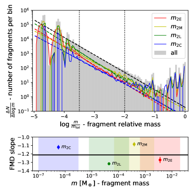
3.3 توزيع الشظايا
في هذا القسم، نحدد توزيع الشظايا التي يمكن أن تنتج في التصادمات بين الأجنة الكوكبية. وبما أن تكاملات N-body لا تحل تصادمات جنين-جنين، فإننا نستخدم المعلمات المدارية للأجسام المتصادمة لحظة اصطدامها (أي موضعها في فضاء معلمات فهرس PC) لتحديد ناتجها المحتمل باستخدام نتائج محاكاة SPH (أي موضعها في فضاء معلمات فهرس CO).
عموما، لكل تصادم N-body، تكفي معرفة الكتلة التصادمية الكلية ()، ونسبة الكتلة ()، وسرعة الاصطدام المُطبعة ()، لتحديد ذلك التصادم تحديدا فريدا في فهرس PC. غير أنه، نظرا إلى استقلال الفهرسين أحدهما عن الآخر، فقد لا تقابل كل مجموعة معلمات من فهرس PC بالضرورة شرطا ابتدائيا مطابقا لمحاكاة SPH في فهرس CO. ومن ثم يلزم تطوير منهجية لتحديد الدرجة التي يمكن بها استخدام نتائج محاكاة SPH لمجموعة معينة من تصادمات جنين-جنين. ويمكن فعل ذلك بوزن الفرق بين الشرط الابتدائي لتصادم جنين-جنين في فهرس PC وأقرب شرط ابتدائي له في فضاء معلمات فهرس CO. وفيما يلي نشرح نهجنا في تطوير مقياس الوزن هذا.
تذكر أن الشروط الابتدائية لمحاكاة SPH قُسمت إلى شبكات على امتداد جميع المعلمات. لنفترض أن معلمة من مجموعة شروط ابتدائية لتصادم في فهرس PC تقع في الخلية الشبكية -ية في فضاء معلمات فهرس CO، حيث تُعطى قيمة الكمية نفسها بـ . ونُدخل الدالة ، التي سنشير إليها فيما يلي باسم دالة الوزن، بوصفها مقياسا للفرق بين القيمتين و،
| (3) |
وهنا، . نعرّف الكمية على أنها طول التحجيم لدالة الوزن الموافق لثلث الفرق بين مجالين متتاليين للكمية في فضاء معلمات فهرس CO. ونختار هذا الطول المنتهي لأنه، كما تبين نتائج محاكاة SPH، يمكن أن يتغير ناتج التصادم تغيرا ملحوظا من نقطة شبكية إلى التي تليها. ومن المعادلة 3، إذا كانت لمعلمة في فهرس PC القيمة ، فإننا نعد تلك المعلمة بعيدة جدا عن ، ومن ثم لا يمكن استخدام نتائج محاكاة SPH الموافقة للشرط الابتدائي لذلك التصادم بين جنينين في فهرس PC.
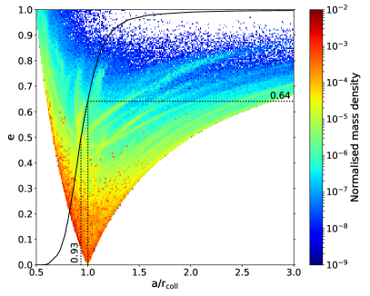
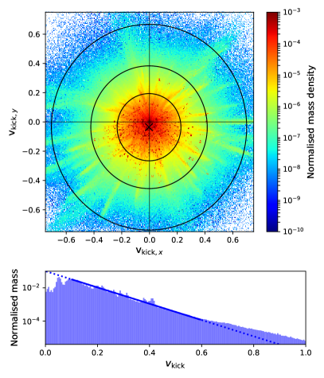
عند تطبيق المعادلة 3 على نتائج فهرس PC، من المهم ملاحظة أنه لكل مجموعة من معلمات ، أُجريت محاكاة SPH لأربع قيم مختلفة لزاوية الاصطدام وأربع توليفات مختلفة للكسر الكتلي للماء. وهذا يعني أنه، لكل مجموعة من الشروط الابتدائية في فهرس PC، توجد 16 محاكاة SPH بزوايا اصطدام ومحتويات مائية مختلفة. وبما أن التصادمات في فهرس PC لا تشمل هذه المعلمات، فإننا نستخدم إجراء التوسيط الآتي لإدراج آثارها الكلية في الحسبان.
ولإزالة آثار الكسر الكتلي للماء وزاوية الاصطدام لتصادم معين بين جنينين، نحسب كتلة الشظايا الكلية لذلك التصادم بالتوسيط على جميع قيمها الـ 16 ونحدد موضعه الموافق في فضاء معلمات CO باستخدام المعادلة 3؛
| (4) |
ومع أن هذا الإجراء يزيل المعلومات المتعلقة بكتلة الشظايا المفردة، فإنه يعطي احتمال وجود شظية ذات كتلة وشروط ابتدائية محددتين .
نطبق المعادلتين 3 و4 على جميع التصادمات الـ 1356 في فهرس PC. ولضمان توافق الكميات التي تمثل أطوالا في كلا الفهرسين لكل تصادم بين جنينين، نُحجّم نصف المحور الأكبر والمسافة الشعاعية في فهرس PC بمسافة موضع التصادم عن النجم . وتتكون النتيجة النهائية من 9,373,158 شظية ذات كتلة دنيا مقدارها M⊕، نعرف لها نصف المحور الأكبر المُطبّع ، والشذوذ المركزي ، وحجة الحضيض . وفيما يلي، نستخدم هذا النهج لتحديد توزيع المادة اللاحقة للاصطدام في فضاء معلمات ، وفي مستوى النظام.
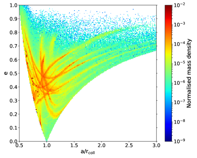
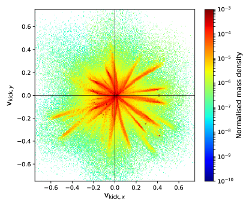
3.3.1 توزيع الشظايا على المستوى
تبين الأشكال 6 توزيع الشظايا على المستوى . ويمثل الترميز اللوني مقدار الكتلة المحصورة في خلية شبكية لكل وحدة مساحة من الخلية. ويبين المنحنى الأسود المتصل القيمة التراكمية المُطبعة لكتلة الشظايا. وكما هو متوقع، تتوزع الشظايا بين فرعين ناشئين عند (1,0). ونلاحظ أن جميع الأطوال قد حُجّمت بالمسافة الشعاعية من نقطة التصادم إلى الشمس، .
تتمثل نتيجة مثيرة للاهتمام يوضحها الشكل 6 في المنطقة التي تتركز فيها معظم كتلة الشظايا. وكما هو مبين هنا، تبقى غالبية الكتلة بعد الاصطدام في جوار نقطة التصادم على مدارات منخفضة الشذوذ المركزي . ولتفسير هذه السمة، نعرض في الشكل 7 مركبتي و لسرعة الشظية بالنسبة إلى سرعة مركز كتلة النظام مباشرة بعد الاصطدام، . وفي هذه المعادلة، تمثل سرعة الشظية، وتمثل سرعة مركز الكتلة. وكما تبين اللوحة العليا من الشكل 7، فإن توزيع السرعة النسبية شبه كروي وبمقدار أصغر عموما من 0.3، مما يؤكد تركّز الكتلة في جوار نقطة التصادم في الشكل 6. وكما برهن Jackson et al. (2014)، يتسق ذلك مع توزيع الشظايا المتولدة في التصادمات بين أجسام منخفضة الشذوذ المركزي.
يبين الشكل 7 أيضا شرائط من الشظايا عالية السرعة تمتد بعيدا عن نقطة الاصطدام. وهذه الشرائط، المرئية أيضا في الشكل 6، تنتج في اصطدامات عالية السرعة () على مدارات عالية الشذوذ المركزي (). ويتسق توزيع الشظايا الخاص الناتج خلال هذه التصادمات، المبين في الشكل 8، مع التوزيع الذي حصل عليه Jackson et al. (2014) للتصادمات على مدارات عالية الشذوذ المركزي، وهو يعتمد بقوة على متجه الشذوذ المركزي للجسمين المتصادمين، وكذلك على الاتجاه الذي تُقذف فيه الشظايا (الشرائط في الشكل 9). وعلى الرغم من أن توزيع الشظايا الناتج عن هذه التصادمات العالية السرعة والعالية الشذوذ المركزي ينحرف كثيرا عن التوزيع الكلي، فإن مقدار الشظايا الكلي الناتج لا يمثل إلا من الكتلة الكلية للشظايا من المحاكاة الـ 10 المدروسة. ولذلك قررنا الإبقاء على هذه التصادمات في تحليلنا من باب الاكتمال.
يبين الفحص التفصيلي للشكل 7 أن مركز توزيع السرعات يقع منزاحا قليلا عن موقع الاصطدام. وفي حين يكون هذا الإزاحة مهملا على طول محور ( )، فإنه مهم نسبيا على طول محور ()، مما يشير إلى فقدان طفيف للزخم الزاوي أثناء الاصطدام. وهذا التغير في الزخم الزاوي المداري، العائد جزئيا إلى تغير دوران الأجسام الرئيسة اللاحقة للتصادم وجزئيا إلى فقدان الطاقة أثناء الاصطدام، يجعل توزيع الشظايا ينحرف قليلا عن نقطة التصادم، ويظهر في صورة زيادة سكانية صغيرة باتجاه أحد الحدين. ويمكن رؤية ذلك في الشكل 6، حيث يكون الفرع الأيسر () أكثر امتلاء قليلا من الفرع الأيمن ().
يؤدي الفقد الطفيف في الطاقة والزخم الزاوي إلى أن تمتلك الشظايا أنصاف محاور كبرى أصغر قليلا. ويبين منحنى توزيع الكتلة التراكمية لهذه الأجسام، الموضح بمنحنى أسود متصل في الشكل 6، أن من الكتلة الكلية للشظايا توجد في مدارات بأنصاف محاور كبرى أصغر من الموضع الشعاعي لنقطة التصادم . وبعبارة أخرى، فإن أكثر من نصف الشظايا لها أنصاف محاور كبرى أصغر من . وقد لا يبدو مقدار هذا التوزيع الصافي إلى الداخل للمادة اللاحقة للاصطدام كبيرا في تصادم واحد. غير أنه، عند النظر إليه في السياق الأشمل لمرحلة الاصطدامات العملاقة، حيث توجد تصادمات عديدة، فقد يكون أثره التراكمي في جلب المادة أقرب إلى النجم المركزي مهما. وعلاوة على ذلك، درسنا احتمال أن يكون هذا الأثر ناتجا عن فئة محددة من التصادمات. إلا أننا وجدنا أن الأمر ليس كذلك، باستثناء تغيرات صغيرة في السعة. فعلى سبيل المثال، تنتج التصادمات العالية السرعة والعالية الشذوذ المركزي المبينة في الشكلين 8 و9 إزاحة في التوزيع مقدارها .
تبين اللوحة السفلية من الشكل 7 المدرج التكراري لسرعات الشظايا اللاحقة للاصطدام بدلالة كتلها. وكما هو مبين هنا، بالنسبة إلى قيم ، يبدو أن انخفاض سعة السرعة النسبية يُظهر اتجاها أسيا. أما بالنسبة إلى قيم ، فينحرف التوزيع عن هذا الاتجاه ويُظهر انخفاضا. ويمكن أن يُعزى ذلك إلى إعادة تراكم الشظايا منخفضة السرعة على أجسام أكبر. وتشير محاكاتنا إلى أن الغالبية العظمى من الشظايا تقع في المجال 0.1< < 0.6. وتدل ملاءمة أسية لهذا المجال من التوزيع على أن
| (5) |
حيث إن عامل التحجيم .
تأثير زحل ولغرض المقارنة، أجرينا 10 محاكاة بالشروط الابتدائية نفسها لمحاكاة فهرس PC لدينا (القسم 2.1)، لكننا أدرجنا زحل في مدار دائري. وفي هذه الحالة، حصلنا على 1342 تصادما جديدا. ويبين الشكل 10 توزيع شظاياها. وتبين مقارنة هذا الشكل بالشكل 6 أن السكان على الفرع الأيسر يمتدون إلى قيم أعلى من الشذوذات المركزية ، وأن التوزيع مع زحل يحتوي على مزيد من الشرائط عالية السرعة. ويمكن أن يُعزى ذلك إلى الرنين العلماني لزحل، الذي يؤثر بقوة في تطور مدارات الأجنة الكوكبية (Haghighipour & Winter, 2016). وأظهرت مقارنة بمحاكاة من دون زحل أن اضطراب زحل ضاعف تقريبا عدد الاصطدامات عالية السرعة (أي تلك ذات ). وعلى الرغم من أهمية تأثير زحل، فإن هذه التصادمات تشكل جزءا صغيرا من العدد الكلي للتصادمات، وإسهامها إحصائيا في الخصائص المتوسطة للمادة المقذوفة مهمل. فعلى سبيل المثال، وعلى غرار نظام الشكل 6، فإن من الكتلة المتفتتة الكلية لها أنصاف محاور كبرى أصغر من الموضع الشعاعي للتصادم .
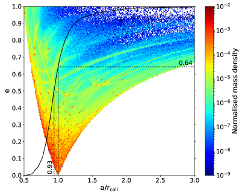
3.3.2 توزيع الشظايا على المستوى
لبناء توزيع الشظايا على المستوى ، حسبنا احتمال أن تكون شظية ذات كتلة في خلية شبكية محددة . وبما أن الشظايا تتحرك، فقد وزنّا هذا الاحتمال بضربه في الزمن () الذي تقضيه الشظية داخل الخلية، بترديد يساوي الفترة المدارية للشظية . أي إن
| (6) |
ثم بُني التوزيع بجمع إسهامات جميع الشظايا. ويبين الشكل 11 النتائج.
من المهم ملاحظة أن التوزيع في الشكل 11 لم يظهر مباشرة بعد التصادم. فكما أُبلغ في أعمال أخرى (e.g., Jackson et al., 2014; Watt et al., 2021)، شكلت المادة اللاحقة للاصطدام أولا أذرعا حلزونية، ثم تطورت، على مقياس زمني يساوي تقريبا مئة مدار كبلري عند ، إلى التوزيع المبين في الشكل. وكما هو متوقع، توزعت الشظايا حول نقطة التصادم عند (1,0) وامتدت تدريجيا على طول الزاوية السمتية، متناظرة تقريبا بالنسبة إلى الخط الواصل بين نقطة الاصطدام والنجم المركزي. وأشار فحص إضافي للتوزيع إلى أن عرضه في الاتجاه الشعاعي يزداد تدريجيا مع الابتعاد عن نقطة الاصطدام، مع بلوغه قيمة عظمى عند النقطة المقابلة لنقطة التصادم بالنسبة إلى النجم المركزي.
3.4 النمذجة التحليلية
كما ذكرنا في البداية، يتمثل هدفنا في تطوير نموذج، ويفضل أن يكون تحليليا، يمكن استخدامه لإظهار ناتج التصادمات. في هذا القسم، نستخدم التوزيع المبين في الشكل 11 لتطوير مثل هذا النموذج.
بالنظر إلى نظام إحداثيات قطبية يكون النجم المركزي عند الأصل ونقطة الاصطدام عند (ومتجه الزخم الزاوي متجها نحو القارئ)، نجد أن التوزيع المبين في الشكل 11 يمكن نمذجته بالدالة
| (7) |
حيث يمكن الحصول على السعة والأسين و باستخدام المعادلة
| (8) |
وتُعطى قيم المعلمات في الجدول 2، ويُعطى مقياس الطول (وهو تقريبا القيمة العظمى في توزيع الكتلة الشعاعي لقيمة معطاة من ) بدالة جيبية
| (9) |
يبين الشكل 12 توزيع الناتج باستخدام المعادلة 7. وتبين مقارنة هذا الشكل بالشكل 11 أن النموذج قد التقط جميع العناصر الأساسية للتوزيع. فعلى سبيل المثال، يمكن أن نرى بوضوح في هذا الشكل أن معظم المادة اللاحقة للاصطدام أقرب إلى النجم المركزي من نقطة التصادم. ويمكن رؤية ذلك أيضا في الشكل 13 حيث تُعرض تبعية للدوال الأربع و و و. وحقيقة أن تتذبذب بين 1 (عند نقطة التصادم ) و0.9 (قرب النقطة المقابلة )، تشير إلى أن المادة اللاحقة للاصطدام تتناثر تفضيليا إلى مدارات أقرب إلى النجم المركزي. وفوق ذلك، يرتبط الحد الأدنى لـ مباشرة بإزاحة توزيع الدفع الموضحة في القسم 3.3.1. وفي الواقع، فإن غلبة الدفعات في اتجاه y السالب () تجعل حجة الحضيض للشظايا تتمركز حول ، في حين يؤدي الانزياح الصغير للدفعات في اتجاه x السالب () إلى تحريك حجة الحضيض قليلا باتجاه عقارب الساعة، مولدا طورا مقداره 0.013 في المعادلة 9.
وأخيرا، درسنا كيف يتغير التوزيع المكاني للشظايا عندما تُؤخذ مجموعات فرعية منفردة من فهرس PC في الاعتبار. وعلى وجه الخصوص، قسمنا التصادمات إلى مجموعات فرعية اعتمادا على سرعة الاصطدام المُطبعة. وحصلنا على التوزيع المكاني للشظايا لهذه المجموعات الفرعية باستخدام التحليل نفسه المطبق على التوزيع المكاني الكلي (القسم 3.3.2)، ثم لاءمنا النتائج باستخدام المعادلة 7. ووجدنا أنه لا يمكن ملاحظة فرق مهم عند مقارنة التوزيعات المكانية من المجموعات الفرعية بالتوزيع الكلي في الشكل 11. غير أننا لاحظنا أن النموذج في المعادلة 7 شديد الحساسية للشظايا المفردة عالية الكتلة. وعلى وجه الخصوص، يميل مقياس الطول في المعادلة 9 إلى مطابقة مدار أكبر الشظايا بدلا من مطابقة القيمة العظمى الفعلية للتوزيع على طول الاتجاه الشعاعي. وتُحل هذه المسألة بسهولة عندما يؤخذ عدد كاف من التصادمات في الاعتبار، كما في حالة التوزيع المكاني في الشكل 11، المحصل عليه بالنظر في جميع التصادمات الـ 1356 في فهرس PC لدينا. ويمكن لعمل مستقبلي محتمل أن يزيد حجم فهرس PC لتحسين توصيف التوزيع المكاني للشظايا بوصفه دالة في معلمات التصادم.
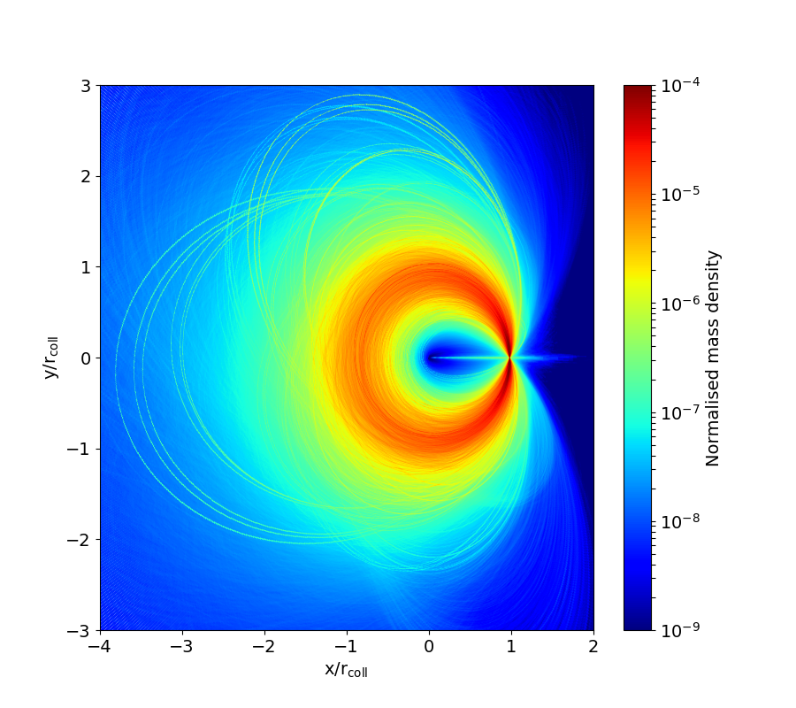
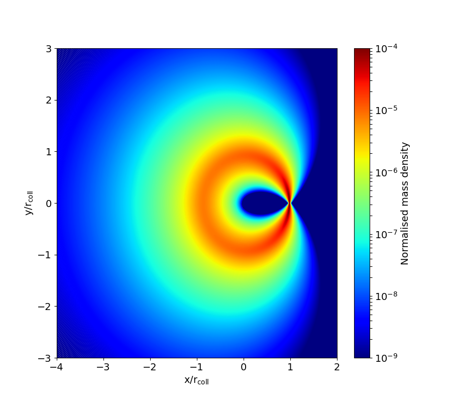
4 الاستنتاجات
في هذه الدراسة، نقدم نتائج تحليل إحصائي للمادة المتولدة من التصادمات بين الأجسام الكوكبية الأولية خلال المرحلة الأخيرة من تكوّن الكواكب الأرضية. وباستخدام فهرس يضم 1365 اصطداما ونتائج محاكاة SPH لـ 880 تصادما بين الأجنة، نجد أن نحو 4.2% من الكتلة الكلية للأجنة المتصادمة سيتحول إلى حطام. ويمكن أن ترتفع هذه القيمة إلى 24% (Burger et al., 2020) عندما تكون كتل الأجسام المتصادمة أصغر ويُدرج كوكب عملاق ثان.
ومن النتائج المهمة لدراستنا الإسهام المهمل للتصادمات الكارثية في الكتلة الكلية للشظايا التصادمية. وتُظهر محاكاتنا أن معدل حدوث هذه التصادمات صغير عموما. ولهذا السبب، وعلى الرغم من أنها تحول كامل كتل الأجسام المتصادمة إلى حطام، فإنها لا تسهم كثيرا في الكتلة الكلية للشظايا. وتشير هذه النتيجة إلى أنه عند محاكاة التصادمات لدراسة نمو الكواكب المصغرة أو المرحلة المتأخرة من تكوّن الكواكب الأرضية، يمكن إهمال التصادمات الكارثية كتقريب أول.
في محاكاتنا، لم ننظر في توزيع الماء بعد كل اصطدام. غير أن المواد المتطايرة، مثل الماء، معرضة بوجه خاص للفقدان خلال هذه الأحداث ولإعادة التوزيع عبر النظام (Kegerreis et al., 2020). ولذلك فإن منهجية متقدمة ومتينة لإدراج إنتاج الشظايا التصادمية أمر بالغ الأهمية في محاكاة التكوّن الكوكبي عموما، ولا سيما في تلك التي تهدف إلى تتبع المواد الكيميائية.
أشار تحليلنا إلى أنه، بالنسبة إلى الشظايا في المجال من إلى ، يمكن تقريب توزيع الكتلة بدالة أسية ذات أس قدره . وبافتراض كثافة حجمية ثابتة في هذا المجال، يتحول توزيع الكتلة هذا إلى توزيع أحجام أسي بأس قدره . وتتسق هذه القيمة مع القيمة الوسيطة التي حصل عليها Leinhardt & Stewart (2012).
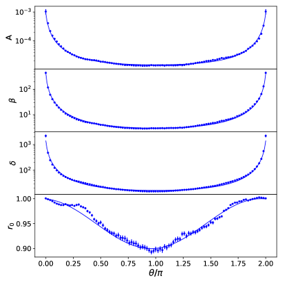
أشار تحليلنا للتوزيع المكاني للشظايا إلى أن مدارات الغالبية العظمى من الأجسام اللاحقة للاصطدام لها شذوذات مركزية أصغر من 0.4، مما يعني أن معظم الشظايا التصادمية لها سرعات منخفضة. ووجدنا أيضا أن كثيرا من هذه الشظايا أقرب إلى النجم المركزي من نقطة الاصطدام. وقد لوحظ هذا التناثر الداخلي للمادة اللاحقة للاصطدام للمرة الأولى، ويمكن أن يُعزى إلى فقدان الزخم الزاوي والطاقة أثناء الاصطدام.
وأخيرا، طورنا صيغة تحليلية لتوزيع الشظايا (المعادلة 7). وتثبت هذه المعادلة فائدتها في التنبؤ بنتائج الاصطدامات العملاقة وتحليلها، مع الاستغناء عن الحاجة إلى إجراء محاكاة SPH لهذه الأحداث.
الشكر والتقدير
نشكر المحكم John Chambers على قراءته النقدية لورقتنا وتعليقاته المفيدة التي حسنت مخطوطتنا. دُعم هذا العمل من برنامج زمالة طلبة الدكتوراه العالمي في NYU Abu Dhabi. يقر TIM بالدعم المقدم من Austrian Science Fund (FWF): P33351-N. ويثمن CMS الدعم المقدم من مشروعات DFG German Science Foundation 398488521 و446102036 و285676328. ويقر NH بالدعم المقدم من منحة NASA 80NSSC21K1050.
توافر البيانات
ستُتاح البيانات التي يستند إليها هذا المقال بناء على طلب معقول إلى المؤلف المراسل.
References
- Barnes et al. (2009) Barnes R., Quinn T. R., Lissauer J. J., Richardson D. C., 2009, Icarus, 203, 626
- Benz & Asphaug (1994) Benz W., Asphaug E., 1994, Icarus, 107, 98
- Benz et al. (1986) Benz W., Slattery W. L., Cameron A. G. W., 1986, Icarus, 66, 515
- Burger et al. (2018) Burger C., Maindl T. I., Schäfer C. M., 2018, Celestial Mechanics and Dynamical Astronomy, 130, 2
- Burger et al. (2020) Burger C., Bazsó Á., Schäfer C. M., 2020, A&A, 634, A76
- Carter et al. (2015) Carter P. J., Leinhardt Z. M., Elliott T., Walter M. J., Stewart S. T., 2015, ApJ, 813, 72
- Chambers (1999) Chambers J. E., 1999, MNRAS, 304, 793
- Chambers (2013) Chambers J. E., 2013, Icarus, 224, 43
- Clement et al. (2019) Clement M. S., Kaib N. A., Raymond S. N., Chambers J. E., Walsh K. J., 2019, Icarus, 321, 778
- Dormand & Woolfson (1977) Dormand J. R., Woolfson M. M., 1977, MNRAS, 180, 243
- Dugaro et al. (2020) Dugaro A., de Elía G. C., Darriba L. A., 2020, A&A, 641, A139
- Haghighipour & Winter (2016) Haghighipour N., Winter O. C., 2016, Celestial Mechanics and Dynamical Astronomy, 124, 235
- Hunter (2007) Hunter J. D., 2007, Computing in Science Engineering, 9, 90
- Ida & Makino (1993) Ida S., Makino J., 1993, Icarus, 106, 210
- Jackson et al. (2014) Jackson A. P., Wyatt M. C., Bonsor A., Veras D., 2014, MNRAS, 440, 3757
- Kegerreis et al. (2020) Kegerreis J. A., Eke V. R., Catling D. C., Massey R. J., Teodoro L. F. A., Zahnle K. J., 2020, ApJ, 901, L31
- Kokubo & Ida (2000) Kokubo E., Ida S., 2000, Icarus, 143, 15
- Leinhardt & Stewart (2012) Leinhardt Z. M., Stewart S. T., 2012, ApJ, 745, 79
- Monaghan & Pongracic (1985) Monaghan J., Pongracic H., 1985, Applied Numerical Mathematics, 1, 187
- Morishima (2015) Morishima R., 2015, Icarus, 260, 368
- Mustill et al. (2018) Mustill A. J., Davies M. B., Johansen A., 2018, MNRAS, 478, 2896
- O’Brien et al. (2006) O’Brien D. P., Morbidelli A., Levison H. F., 2006, Icarus, 184, 39
- Poon et al. (2020) Poon S. T. S., Nelson R. P., Jacobson S. A., Morbidelli A., 2020, MNRAS, 491, 5595
- Raymond et al. (2004) Raymond S. N., Quinn T., Lunine J. I., 2004, Icarus, 168, 1
- Raymond et al. (2006) Raymond S. N., Quinn T., Lunine J. I., 2006, Icarus, 183, 265
- Schäfer et al. (2016) Schäfer C., Riecker S., Maindl T. I., Speith R., Scherrer S., Kley W., 2016, Astronomy & Astrophysics, 590, A19
- Schäfer et al. (2020) Schäfer C. M., et al., 2020, Astronomy and Computing, 33, 100410
- Scora et al. (2020) Scora J., Valencia D., Morbidelli A., Jacobson S., 2020, MNRAS, 493, 4910
- Van Der Walt et al. (2011) Van Der Walt S., Colbert S. C., Varoquaux G., 2011, Computing in Science and Engineering, 13, 22
- Watt et al. (2021) Watt L., Leinhardt Z., Su K., 2021, Monthly Notices of the Royal Astronomical Society
- Wetherill (1988) Wetherill G. W., 1988, Accumulation of Mercury from planetesimals. pp 670–691